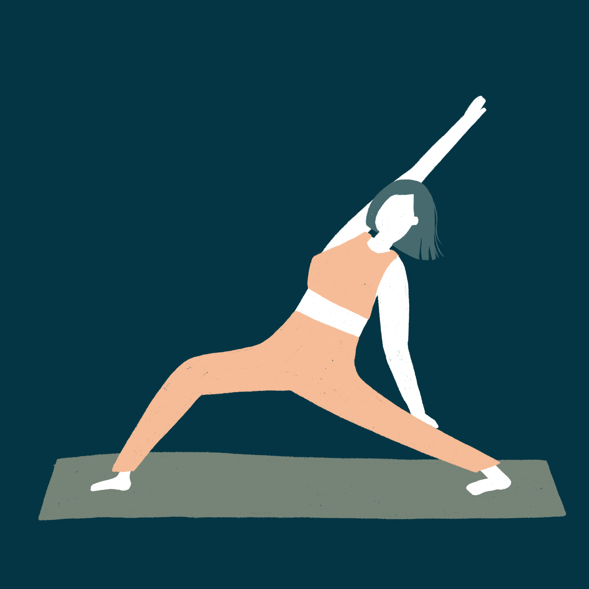

The combination of deep breathing, physical movement,and mindfulness can help you feel more relaxed and calm. Practicing yoga can help you become more aware of your body and your breath. This can help you notice when you're feeling tense or overwhelmed and take steps to address it. Yoga requires concentration and focus, which can help you clear your mind of distractions and negative thoughts.Many yoga practices, such as restorative or yin yoga, are designed to promote relaxation and rest. This can be especially helpful when you're feeling overwhelmed.
